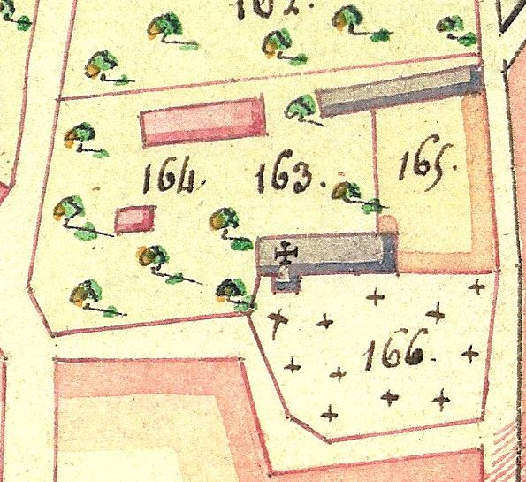

La cure de Vitotel de la révolution à nos jours

· 2 avril 1793 : vente des biens de la cure de Vitotel, comprenant les bâtiments, jardins et masures, herbes et fruits. Délabrement de l’église qui servira « à établer les bestiaux du Père Duvallet ».
· 1803 : la cure de Vitotel est rattachée à celle de Vitot pour le spirituel.
· 9 mars 1830 : partage Adam (entre 3 enfants) à l’Etude Paturel : Romain Adam (maire de Vitotel) devient le nouveau propriétaire.
· 1er mars 1860 : Louis Adam (fils) devient le nouveau propriétaire.
· 22 – 30 septembre 1886 : M. Boyer achète la cure.
· Vente de la cure à M. Victor Aimé Quillebeuf et Mme Joséphine Alexandrine Roulant, son épouse, demeurant au Prieuré au Neubourg.
· Jules Roger devient le nouveau propriétaire.
· Frédéric Roger hérite des terres situées autour de l’église et en Janvier 2010 : Frédéric Roger fait don de la parcelle de terrain située à l’est, au nord et à l’ouest de l’église ce qui permet de reconstituer une partie de la cure.
· 1930 : démolition de la cure, d’un four à pain et d’une étable.